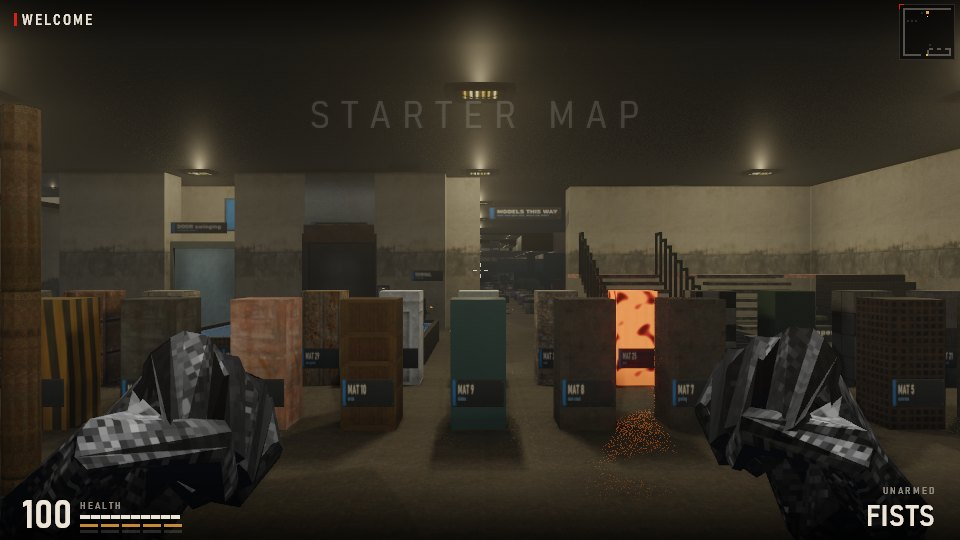
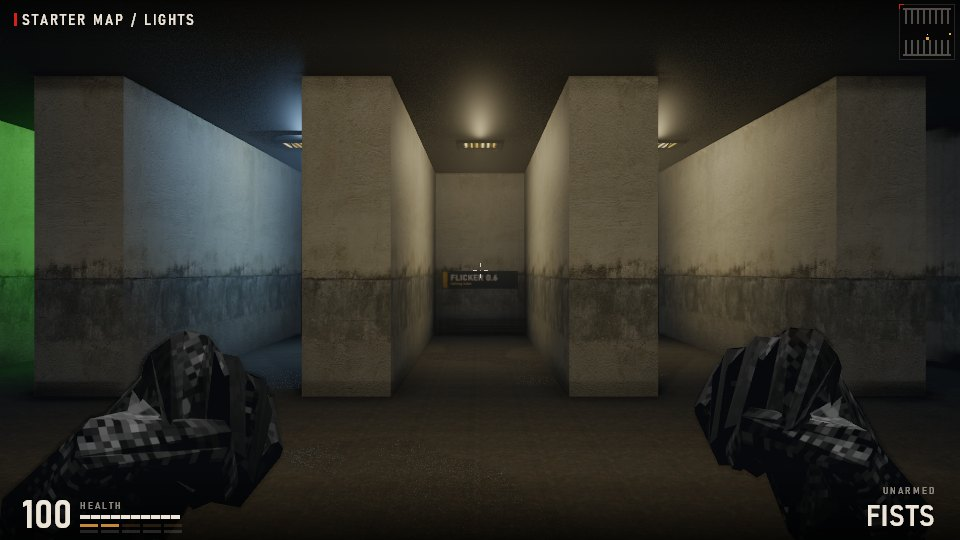
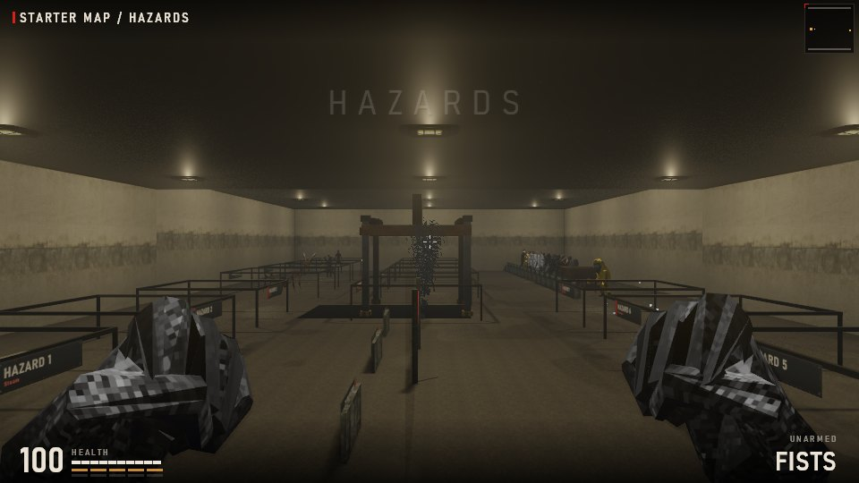
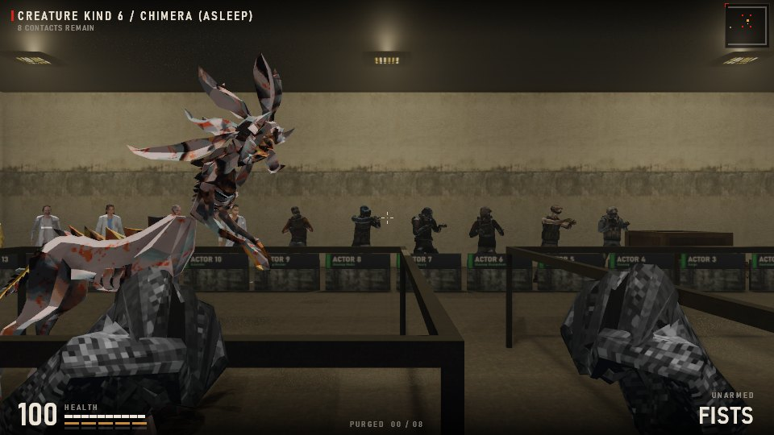
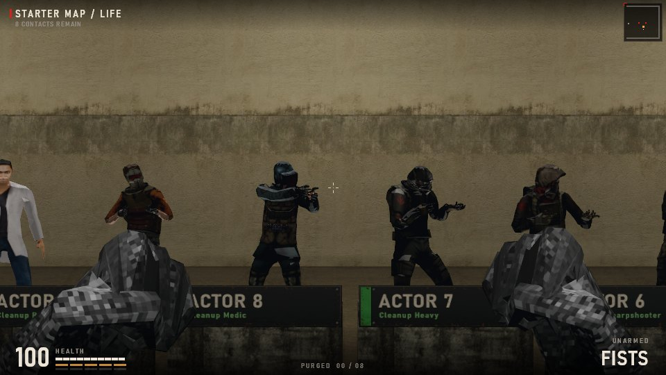
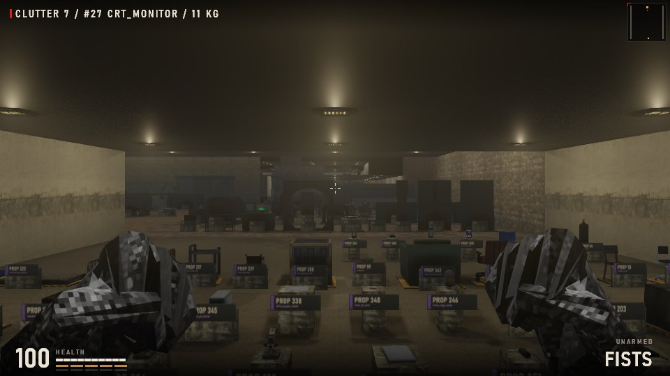
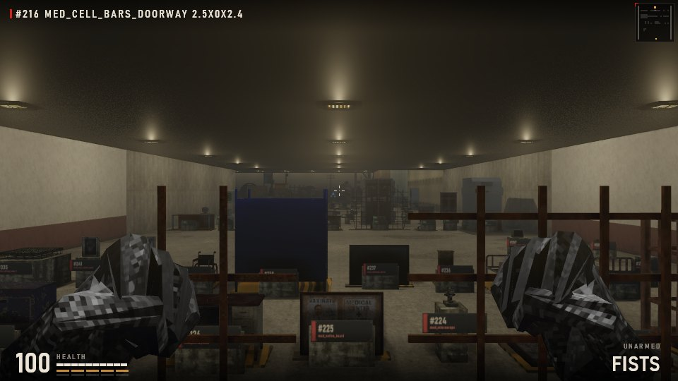
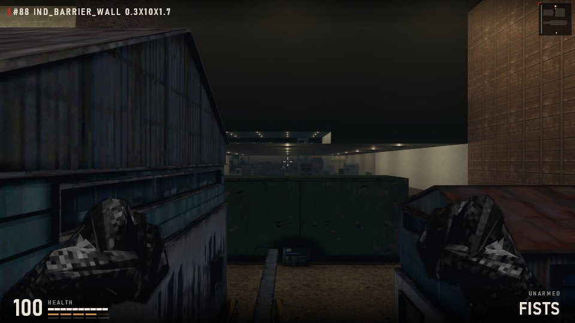

Making custom maps
A custom map is one plain text file. Put it in custom maps beside the game, start the game, and pick it under CUSTOM MAPS on the title screen. This guide shows how the file works, with Starter Map.txt as the worked example: a walkable debug world with every part of a map lined up and labelled.
1. Quick start
- Copy
Starter Map.txttoMy Map.txtin the same folder. - Open it in Notepad. Change the
CAMPAIGN|STARTER MAP|0line toCAMPAIGN|MY MAP|0. - Start the game: CUSTOM MAPS now lists MY MAP. Each map file is its own campaign.
- Delete the parts you do not want, move the rest, and add your own. Restart the game, or reopen the CUSTOM MAPS menu, to reload.
RawMetal-custom-maps.txt next to the game, with the line number of the problem.A smallest working map, one closed room 6 x 6 m with a lamp:
--- CUSTOM_CAMPAIGN_DATA_START --- CAMPAIGN|TINY ROOM|0 MAP|0|Tiny room|0|0|3.5|3.5|0|0|3|0.3|industrial_night|0|0|0|0|0 LAYER|0|0|Floor|0|0 ROW|0|0|0|######################## ROW|0|0|1|#......################# ROW|0|0|2|#......################# ROW|0|0|3|#......################# ROW|0|0|4|#......################# ROW|0|0|5|#......################# ROW|0|0|6|#......################# ROW|0|0|7|######################## ROW|0|0|8|######################## ROW|0|0|9|######################## ROW|0|0|10|######################## ROW|0|0|11|######################## ROW|0|0|12|######################## ROW|0|0|13|######################## ROW|0|0|14|######################## ROW|0|0|15|######################## ROW|0|0|16|######################## ROW|0|0|17|######################## ROW|0|0|18|######################## ROW|0|0|19|######################## ROW|0|0|20|######################## ROW|0|0|21|######################## ROW|0|0|22|######################## ROW|0|0|23|######################## LIGHT|0|4|4|2.85 --- CUSTOM_CAMPAIGN_DATA_END ---
2. The file
|. Lines starting # are notes.Save as plain text (UTF-8 or ASCII). Numbers use a dot for decimals. A field can be left empty (||) where the reference says it is optional.
Reading a record
3. Space and height
Joining maps
A campaign can hold up to 180 maps. Give each map an origin 24 m from its neighbour (0 0, 24 0, 0 24...) and set the shared edge open on both maps (openE on the west map, openW on the east one). Leave that edge column or row of tiles as floor. The Starter Map is 27 maps joined like this:
4. Records
Fields in [brackets] are optional and can be left off the end. Every record's second field is the map number it belongs to.
Campaign and maps
| Record | What it does |
|---|---|
CAMPAIGN|name|startMap | Once per file. The name appears in the CUSTOM MAPS menu; startMap is the map you spawn in. |
MAP|index|name|originX|originY|spawnX|spawnY|spawnZ|environment|ceiling|ambient|skybox|openN|openS|openW|openE|lift[|residency|floorMaterial|music|spawnYaw|spawnPitch|startUnarmed] | One per map, numbered 0, 1, 2... with no gaps. origin places the 24 x 24 m map in the world: maps touch at multiples of 24. spawn is in map metres. environment 0 indoor, 1 outdoor. ceiling is the absolute ceiling height (indoors). ambient 0-1 is the base light (0.3 is a good start). skybox: industrial_night indoors. openN/S/W/E 1 lets you walk across that edge into the neighbouring map. lift 0. Optional tail: residency -1, floorMaterial 0 concrete / 1 carpet, music 0, spawnYaw radians, spawnPitch, startUnarmed 0/1. |
SURFACE|map|wall|floor|ceiling | Wall, floor and ceiling finish for the whole map; -1 keeps the default. See the surface table. |
LAYER|map|layer|name|elevation|thickness | A floor level. Layer 0 is the ground (elevation 0, thickness 0). Upper layers use thickness > 0 and = tiles for walkable deck. |
ROW|map|layer|row|24 characters | One line of the tile grid, row 0 (north) to 23 (south). Exactly 24 characters: see the tile diagram. |
Building
| Record | What it does |
|---|---|
STRUCT|map|x1|y1|x2|y2|bottom|top|rail|material[|solid] | A box: walls, floors, platforms, plinths. x1<x2, y1<y2 in map metres; bottom/top are heights. rail 1 draws it as a thin railing. solid 0 lets you walk through it. |
STAIR|map|x1|y1|x2|y2|bottom|top|steps|alongY|ascending[|openUnderside|tread|rails] | A flight of steps inside the box. alongY 1 climbs along y, ascending 1 rises toward the larger coordinate. Optional open underside, tread thickness (0.12) and side rails. |
DOOR|map|left|right|y|z|entry|transfer|swinging|needClear|sign[|state|value] | A door across x left..right at y (use a tile line + 0.5, between # tiles). swinging 0 slides, 1 swings. needClear 1 keeps it shut until the map's creatures are dead; state/value lock it until a state is set. transfer 1 makes it the exit to the next chapter, entry 1 the door you arrive through: leave both 0. sign 0. |
PIPE|map|x1|y1|x2|y2|z|radius|endZ|material | A pipe from (x1,y1) at height z to (x2,y2) at endZ. Same x,y and different heights make a riser. material 0-6. |
WATER|map|x1|y1|x2|y2|bed|surface | A volume of water from bed up to surface height. Build a basin around it with STRUCT. |
BREAKABLE|map|x1|y1|x2|y2|bottom|top|material|health|holds|brokenState|triggerState | A box that shatters when shot (glass is material 17). brokenState is set when it breaks. |
Things in the map
| Record | What it does |
|---|---|
FIXTURE|map|model|x|y|base|width|depth|height|yaw|solid[|core|visible] | A model from the model list, centred at x,y, its base this high, stretched to width x depth x height (use the listed size to keep it in proportion). solid 1 blocks you. At yaw 0 the imported models (63 and up) face south (+y) and yaw 3.142 turns them to face north; the engine's own models (0-62) face the other way. Check in game. |
CLUTTER|map|kind|x|y|z|yaw | A loose object that can be knocked about: kinds 0-6. z -999 drops it to the floor. |
CLUTTER|map|7|x|y|z|yaw|model|width|depth|height|pitch|roll|breakState | A loose model you can pick up and throw (see the Props room). breakState may be empty. |
PICKUP|map|kind|x|y | Health (0), shotgun ammo (1) or handgun ammo (2). |
CREATURE|map|kind|x|y|z[|scale|health|wakeState] | A creature. scale 0.5-2, health 0 for the default. With a wakeState it sleeps (blind and deaf) until that state is set or it is hurt. |
TERMINAL|map|x|y|z|control|title|line1|line2[|activateState|toggle|requireState|yaw] | A computer you read with E. control 1 sets activateState (toggle 1 flips it on and off) and can switch lights, doors and events. |
SIGN|map|x|y|z|width|height|yaw|title|subtitle|colour | A wall sign. z is its centre. colour is a 24-bit number (0x3c8cd8 = 3968216). Put it 0.05 m in front of a wall. |
Light and air
| Record | What it does |
|---|---|
LIGHT|map|x|y|z[|mount|yaw|intensity|range|kelvin|tint|state|value|invert|period|onTime|phase|flicker|fitting|w|d|h|gelR|gelG|gelB] | A lamp. Only x, y, z are required. mount 0 ceiling, 1 wall (x,y on the wall face, yaw pointing out), 2 floor. intensity ~1, range in metres, kelvin 1000-12000 (3400 default), tint -1 magenta..1 green, state/value switch it with a state, period/onTime blink it, flicker 0-1. gel R G B (0-1 each) colours it: 1 0.1 0.06 is emergency red. |
DARK|map|x1|y1|x2|y2[|bottom|top|state|value|invert|jam] | True darkness inside the box; jam 1 (default) also kills the flashlight. |
ZONE|map|x1|y1|x2|y2|name[|bottom|top|title|hazeR|hazeG|hazeB|density] | A named place: the HUD shows name while you are inside. A title shows a big title card on entry. A haze gives the box its own fog colour. |
EMITTER|map|x|y|z|driftX|driftY|rise|rate|radius|growth|count | Smoke or steam rising from a point. |
Danger
| Record | What it does |
|---|---|
HAZARD|map|kind|x1|y1|x2|y2|bottom|top|damage | Hurts whoever stands in the box, damage per second. Kinds in the hazard table. |
COMPACTOR|map|x1|y1|x2|y2|bed|raised|period | A crushing ceiling that cycles every period seconds. |
LEAD|map|ax|ay|az|bx|by|bz|length|radius[|material|live|...|loose] | A cable between two points; length longer than the gap makes it sag. material 8 is red; live 1 shocks. A loose cable (18th field 1) lies free at its far end. |
Scripting (the basics)
| Record | What it does |
|---|---|
OBJECTIVE_TEXT|map|id|text | Objective wording, used by SCRIPT_ACTION OBJECTIVE. |
SCRIPT_EVENT|map|id|x1|y1|x2|y2|bottom|top|requireState|requireValue|needClear | Fires once when you enter the box (and the gates pass). requireState may be empty. |
SCRIPT_ACTION|map|event|STATE|name|value | What an event does. Other kinds: OBJECTIVE id status(1 active, 2 done), ITEM id count, CHECKPOINT, COMPLETE (ends the campaign), SHAKE amount. |
TIMED_SEQUENCE|map|startState|doneState|x1|y1|x2|y2|bottom|top|duration|finish|soundInterval|soundCutoff|sound|gain|pitch[|loop] | A clock that runs once startState is set: it drives SEQUENCE_CUE lines and ACTOR movement. |
ACTOR|map|clockState|visual|height|loop|tool|index + ACTOR_KEY|map|index|timeMs|x|y|z|yaw|clip|phase | A person following keyframes on a clock. Two keys at the same spot (clip 0) make them stand idle, as in the Life room. |
The format also covers outdoor terrain, ash storms, armed guards, dialogue and cargo lifts (the Ashfall Exclusion Zone is built from them). This guide covers the parts every map needs.
5. The Starter Map tour
Pick STARTER MAP under CUSTOM MAPS. Everything stands on a plinth with a sign: the big text is its ID (the number you type in the record), the small text its name. Stand next to anything and the HUD, top left, names it in full. Nothing in it can hurt you unless you climb into a hazard pen or wake a creature by hitting it.








To copy anything you see, search Starter Map.txt for its sign text (for example |#27| or HAZARD 4): the records just above it build that exhibit.
6. Value tables
STRUCT materials
| material | look |
|---|---|
| 0 | default wall |
| 1 | water (hidden) |
| 2 | steel |
| 3 | wall finish |
| 4 | rust |
| 5 | concrete |
| 6 | hidden |
| 7 | grating |
| 8 | dark steel |
| 9 | hidden |
| 10 | brick |
| 11 | tread plate |
| 12 | timber |
| 13 | hazard stripe |
| 14 | yellow paint |
| 15 | bunker concrete |
| 16 | blood |
| 17 | glass |
| 18 | rubber |
| 19 | copper |
| 20 | pale steel |
| 21 | office wall |
| 22 | drop ceiling |
| 23 | carpet |
| 24 | office tile |
| 25 | glow |
| 26 | rock |
| 27 | clinic tile |
| 28 | lab panel |
| 29 | corrugated |
| 30 | invisible proxy |
| 31 | brick |
| 32 | mine timber |
| 33 | ancient stone |
| 34 | growth |
| 35 | crystal |
SURFACE sets
| value | finish |
|---|---|
| -1 | default |
| 0 | concrete |
| 1 | pressure works |
| 2 | brick |
| 3 | clinic tile |
| 4 | lab panel |
| 5 | rock |
| 6 | corrugated |
| 7 | office plaster |
| 8 | mine timber |
| 9 | ancient stone |
| 10 | clinic teal |
| 11 | clinic green |
| 12 | clinic maroon |
Creatures, pickups, hazards, clutter
| value | CREATURE kind | PICKUP kind | HAZARD kind | CLUTTER kind |
|---|---|---|---|---|
| 0 | Huntsman | Health | Electricity | paper |
| 1 | Wasp | Shotgun ammo | Steam | cardboard |
| 2 | Brute | Handgun ammo | Crusher | bottle |
| 3 | Warden | Toxic | electronics A | |
| 4 | Mutant | Fire | electronics B | |
| 5 | Snatcher | Falling debris | plastic | |
| 6 | Chimera | Pressure | wood | |
| 7 | Transformed | Anomaly | a model: see CLUTTER 7 |
ACTOR visuals
| visual | body |
|---|---|
| 0 | Worker |
| 1 | Wasp |
| 2 | Huntsman |
| 3 | Cargo |
| 4 | Cleanup |
| 5 | Cleanup Engineer |
| 6 | Cleanup Sharpshooter |
| 7 | Cleanup Heavy |
| 8 | Cleanup Medic |
| 9 | Cleanup Rusher |
| 10 | Scientist |
| 11 | Senior Scientist |
| 12 | Female Scientist |
| 13 | Female Doctor |
| 14 | Lab Tech |
| 15 | Investigator |
7. All 364 models
Use the ID as the FIXTURE model. Width x depth x height is the model's own size in metres: stretch all three by the same factor to keep it in proportion. "Where" is its plinth in the Starter Map (map name, x, y).
| ID | name | size (m) | where |
|---|---|---|---|
| 0 | wall_panel_a | 2.00 x 0.20 x 3.00 | Engine And Office, 3.48 3.25 |
| 1 | wall_panel_b | 2.00 x 0.20 x 3.00 | Engine And Office, 6.03 3.25 |
| 2 | column | 0.60 x 0.60 x 3.00 | Engine And Office, 8 3.25 |
| 3 | vent | 1.00 x 0.30 x 0.60 | Engine And Office, 9.47 3.25 |
| 4 | ceiling_lamp | 1.00 x 1.00 x 0.15 | Engine And Office, 11.03 3.25 |
| 5 | doorway_wide | 3.00 x 0.40 x 3.00 | Engine And Office, 13.58 3.25 |
| 6 | generator | 1.87 x 0.60 x 0.99 | Engine And Office, 16.56 3.25 |
| 7 | metal_shelf | 1.65 x 0.50 x 1.80 | Engine And Office, 18.87 3.25 |
| 8 | wall_box | 0.67 x 0.20 x 0.91 | Engine And Office, 20.67 3.25 |
| 9 | door_wide_bottom | 3.00 x 0.20 x 1.50 | Engine And Office, 3.98 8.8 |
| 10 | door_wide_top | 3.00 x 0.20 x 1.50 | Engine And Office, 7.53 8.8 |
| 11 | computer | 0.60 x 0.50 x 0.50 | Engine And Office, 10 8.8 |
| 12 | compressor | 2.00 x 1.40 x 1.60 | Engine And Office, 11.98 8.8 |
| 13 | electrical_cabinet | 0.91 x 0.50 x 2.20 | Engine And Office, 13.98 8.8 |
| 14 | tank_system | 1.58 x 1.62 x 2.20 | Engine And Office, 15.78 8.8 |
| 15 | pallet | 1.20 x 1.15 x 0.16 | Engine And Office, 17.71 8.8 |
| 16 | service_van | 2.05 x 4.90 x 2.15 | Engine And Office, 19.89 8.8 |
| 17 | wooden_crate | 1.00 x 1.00 x 1.00 | Engine And Office, 21.96 8.8 |
| 18 | wooden_chair | 1.00 x 1.00 x 1.00 | Engine And Office, 2.98 15.15 |
| 19 | wooden_table | 1.00 x 1.00 x 1.00 | Engine And Office, 4.53 15.15 |
| 20 | extraction_fan | 1.20 x 0.60 x 1.20 | Engine And Office, 6.17 15.15 |
| 21 | packing_crate | 1.00 x 1.00 x 1.00 | Engine And Office, 7.83 15.15 |
| 22 | control_console | 0.78 x 0.49 x 1.30 | Engine And Office, 9.3 15.15 |
| 23 | forklift | 1.20 x 2.60 x 2.20 | Engine And Office, 10.88 15.15 |
| 24 | desk | 1.40 x 0.70 x 0.75 | Engine And Office, 12.72 15.15 |
| 25 | desk_corner | 1.60 x 1.60 x 0.75 | Engine And Office, 14.77 15.15 |
| 26 | office_chair | 1.00 x 1.00 x 1.00 | Engine And Office, 16.62 15.15 |
| 27 | crt_monitor | 1.00 x 1.00 x 1.00 | Engine And Office, 18.17 15.15 |
| 28 | keyboard | 1.00 x 1.00 x 1.00 | Engine And Office, 19.72 15.15 |
| 29 | pc_tower | 1.00 x 1.00 x 1.00 | Engine And Office, 21.27 15.15 |
| 30 | cctv_tv | 1.00 x 1.00 x 1.00 | Engine And Office, 2.98 19.75 |
| 31 | file_cabinet_wide | 0.90 x 0.50 x 0.75 | Engine And Office, 4.47 19.75 |
| 32 | file_cabinet_tall | 0.50 x 0.60 x 1.30 | Engine And Office, 5.9 19.75 |
| 33 | desk_phone | 1.00 x 1.00 x 1.00 | Engine And Office, 7.38 19.75 |
| 34 | mug | 1.00 x 1.00 x 1.00 | Engine And Office, 8.93 19.75 |
| 35 | water_cooler | 0.35 x 0.35 x 1.10 | Engine And Office, 10.4 19.75 |
| 36 | coffee_machine | 1.00 x 1.00 x 1.00 | Engine And Office, 11.88 19.75 |
| 37 | bookcase | 0.90 x 0.30 x 1.80 | Engine And Office, 13.38 19.75 |
| 38 | binder | 1.00 x 1.00 x 1.00 | Engine And Office, 14.88 19.75 |
| 39 | converter | 1.90 x 1.40 x 2.70 | Engine And Office, 16.88 19.75 |
| 40 | flue | 0.40 x 0.40 x 0.70 | Engine And Office, 18.8 19.75 |
| 41 | stock_cage | 2.40 x 1.00 x 1.10 | Engine And Office, 20.98 19.75 |
| 42 | pendant_lamp | 0.50 x 0.50 x 0.60 | Engine And Office 2, 2.9 6.5 |
| 43 | ibeam | 0.30 x 0.30 x 4.00 | Engine And Office 2, 4.3 6.5 |
| 44 | pipe_riser | 0.40 x 0.10 x 4.70 | Engine And Office 2, 5.7 6.5 |
| 45 | valve_wheel | 0.32 x 0.12 x 0.32 | Engine And Office 2, 7.1 6.5 |
| 46 | turbine_casing | 3.00 x 3.00 x 2.50 | Engine And Office 2, 9.58 6.5 |
| 47 | container_open | 2.44 x 6.10 x 2.60 | Engine And Office 2, 12.85 6.5 |
| 48 | container_closed | 2.44 x 10.80 x 2.50 | Engine And Office 2, 15.46 6.5 |
| 49 | drum | 0.55 x 0.55 x 0.80 | Engine And Office 2, 17.28 6.5 |
| 50 | vending_machine | 1.00 x 0.80 x 1.90 | Engine And Office 2, 18.76 6.5 |
| 51 | bench | 1.86 x 0.44 x 0.63 | Engine And Office 2, 20.74 6.5 |
| 52 | road_block | 1.40 x 0.55 x 0.70 | Engine And Office 2, 3.18 16.6 |
| 53 | storage_tank | 3.77 x 1.72 x 2.27 | Engine And Office 2, 6.31 16.6 |
| 54 | gas_cylinder | 1.00 x 1.00 x 1.00 | Engine And Office 2, 9.25 16.6 |
| 55 | test_machine | 2.20 x 2.80 x 2.90 | Engine And Office 2, 11.4 16.6 |
| 56 | metro_car | 3.83 x 22.40 x 5.33 | Engine And Office 2, 13.69 16.6 |
| 57 | ticket_gate | 1.60 x 0.30 x 1.10 | Engine And Office 2, 15.68 16.6 |
| 58 | ticket_machine | 0.97 x 0.41 x 2.24 | Engine And Office 2, 17.51 16.6 |
| 59 | trash_can | 1.00 x 1.00 x 1.00 | Engine And Office 2, 19.05 16.6 |
| 60 | metro_map | 1.29 x 0.08 x 1.58 | Engine And Office 2, 20.74 16.6 |
| 61 | platform_chair | 2.27 x 0.54 x 0.95 | Engine And Office 3, 3.61 3.43 |
| 62 | metro_vending | 1.50 x 0.68 x 2.38 | Engine And Office 3, 6.04 3.43 |
| 63 | barrier | 1.60 x 0.80 x 0.88 | Outdoors, 3.28 3.88 |
| 64 | billboard | 2.12 x 0.10 x 3.40 | Outdoors, 5.69 3.88 |
| 65 | brick_pile | 2.00 x 2.00 x 1.80 | Outdoors, 8.29 3.88 |
| 66 | bus_shelter | 4.17 x 1.36 x 3.19 | Outdoors, 11.93 3.88 |
| 67 | bus_wreck | 11.21 x 3.38 x 3.14 | Outdoors, 18.31 3.88 |
| 68 | cable_reel | 1.00 x 2.00 x 2.00 | Outdoors, 2.98 11.08 |
| 69 | car_a | 2.56 x 6.15 x 2.17 | Outdoors, 5.3 11.08 |
| 70 | car_b | 2.90 x 6.53 x 2.20 | Outdoors, 8.58 11.08 |
| 71 | car_c | 2.65 x 5.61 x 2.14 | Outdoors, 11.91 11.08 |
| 72 | cottage | 15.90 x 14.70 x 5.43 | Outdoors, 17.53 11.08 |
| 73 | dead_tree_a | 2.97 x 3.34 x 7.91 | Outdoors, 3.96 18.81 |
| 74 | dead_tree_b | 1.75 x 1.96 x 4.47 | Outdoors, 6.87 18.81 |
| 75 | dumpster | 1.96 x 1.27 x 1.17 | Outdoors, 9.28 18.81 |
| 76 | fence_wood | 2.00 x 0.06 x 1.27 | Outdoors, 11.81 18.81 |
| 77 | fern_a | 0.97 x 1.04 x 1.15 | Outdoors, 13.85 18.81 |
| 78 | fern_big | 2.00 x 2.18 x 2.62 | Outdoors, 15.88 18.81 |
| 79 | fuel_pump | 0.83 x 1.29 x 2.81 | Outdoors, 17.86 18.81 |
| 80 | gas_canopy | 21.68 x 16.73 x 1.06 | Outdoors 2, 6.23 6.5 |
| 81 | gas_sign | 3.01 x 0.39 x 10.51 | Outdoors 2, 12.03 6.5 |
| 82 | gas_store | 14.31 x 16.21 x 5.21 | Outdoors 2, 17.39 6.5 |
| 83 | grass_a | 0.76 x 0.67 x 1.00 | Outdoors 2, 21.68 6.5 |
| 84 | grass_b | 1.41 x 1.21 x 1.04 | Outdoors 2, 3.18 14.67 |
| 85 | grass_c | 1.12 x 0.92 x 0.56 | Outdoors 2, 4.99 14.67 |
| 86 | ind_annex | 26.59 x 13.23 x 10.78 | Industrial, 6.23 6.5 |
| 87 | ind_barrel | 0.53 x 0.56 x 0.95 | Industrial, 10.95 6.5 |
| 88 | ind_barrier_wall | 0.34 x 10.00 x 1.67 | Industrial, 12.35 6.5 |
| 89 | ind_block | 10.86 x 13.50 x 9.36 | Industrial, 16.34 6.5 |
| 90 | ind_cargo_full | 4.94 x 1.76 x 1.76 | Industrial, 4.94 15.05 |
| 91 | ind_cargo_open | 8.00 x 3.00 x 3.00 | Industrial, 11.71 15.05 |
| 92 | ind_cooling | 4.52 x 4.40 x 11.29 | Industrial, 18.27 15.05 |
| 93 | ind_crate | 0.81 x 0.81 x 0.81 | Industrial, 21.5 15.05 |
| 94 | ind_fence | 0.07 x 5.67 x 1.55 | Industrial 2, 2.9 5.59 |
| 95 | ind_generator | 3.65 x 1.30 x 1.75 | Industrial 2, 5.7 5.59 |
| 96 | ind_hall | 19.88 x 13.86 x 8.14 | Industrial 2, 11.82 5.59 |
| 97 | ind_hut | 7.68 x 3.55 x 4.27 | Industrial 2, 6.23 14.77 |
| 98 | ind_long | 30.58 x 16.84 x 10.55 | Industrial 2, 14.28 14.77 |
| 99 | ind_pallets | 2.21 x 1.77 x 1.08 | Industrial 2, 19.68 14.77 |
| 100 | ind_pipe_arch | 1.03 x 7.61 x 7.11 | Industrial 2, 21.85 14.77 |
| 101 | ind_reservoir | 10.65 x 10.65 x 6.42 | Industrial 3, 6.23 6.5 |
| 102 | ind_roadblock | 2.35 x 0.89 x 1.07 | Industrial 3, 11.7 6.5 |
| 103 | ind_sandbags | 2.50 x 1.60 x 2.54 | Industrial 3, 14.67 6.5 |
| 104 | ind_shed | 8.71 x 5.21 x 5.46 | Industrial 3, 6.23 16.6 |
| 105 | ind_silo | 1.71 x 1.74 x 5.18 | Industrial 3, 11.38 16.6 |
| 106 | ind_stack | 8.46 x 15.69 x 6.27 | Industrial 3, 14.81 16.6 |
| 107 | ind_tower | 11.67 x 22.62 x 12.88 | Industrial 3, 19.32 16.6 |
| 108 | ind_wall | 4.03 x 0.46 x 2.99 | Industrial 4, 4.49 4.22 |
| 109 | ind_wall_corner | 2.43 x 2.43 x 2.99 | Industrial 4, 8.27 4.22 |
| 110 | ind_warehouse | 37.53 x 14.71 x 12.42 | Industrial 4, 13.78 4.22 |
| 111 | ind_works | 22.91 x 13.86 x 11.47 | Industrial 4, 6.23 10.56 |
| 112 | lamppost | 1.05 x 3.47 x 10.52 | Outdoors 2, 6.62 14.67 |
| 113 | log | 3.30 x 1.93 x 0.56 | Outdoors 2, 9.35 14.67 |
| 114 | mine_entrance | 3.86 x 8.28 x 4.82 | Mines, 4.22 6.5 |
| 115 | mine_headframe | 2.72 x 2.69 x 9.72 | Mines, 7.88 6.5 |
| 116 | mine_lift | 2.07 x 2.30 x 3.90 | Mines, 10.83 6.5 |
| 117 | mushrooms | 0.41 x 0.41 x 0.43 | Outdoors 2, 11.97 14.67 |
| 118 | oak_a | 3.72 x 3.63 x 6.91 | Outdoors 2, 14.8 14.67 |
| 119 | oak_b | 3.20 x 3.29 x 6.06 | Outdoors 2, 18.81 14.67 |
| 120 | oak_c | 4.27 x 4.43 x 8.29 | Outdoors 3, 4.61 4.96 |
| 121 | pine_a | 3.66 x 3.36 x 10.11 | Outdoors 3, 9.13 4.96 |
| 122 | pine_b | 3.66 x 3.36 x 10.11 | Outdoors 3, 13.34 4.96 |
| 123 | pole_light | 0.52 x 3.12 x 10.15 | Outdoors 3, 16.15 4.96 |
| 124 | rock_big | 3.62 x 3.30 x 2.01 | Caverns, 4.29 4.4 |
| 125 | rock_mid | 2.52 x 2.67 x 2.12 | Caverns, 7.91 4.4 |
| 126 | rock_small | 1.52 x 1.36 x 0.81 | Caverns, 10.48 4.4 |
| 127 | sapling | 1.97 x 2.50 x 4.30 | Outdoors 3, 18.11 4.96 |
| 128 | stump | 0.88 x 0.93 x 0.52 | Outdoors 3, 20.09 4.96 |
| 129 | tire | 0.97 x 0.38 x 0.97 | Outdoors 3, 21.56 4.96 |
| 130 | transformer | 4.40 x 2.40 x 2.60 | Outdoors 3, 4.68 10.98 |
| 131 | wheat | 1.71 x 1.47 x 1.25 | Outdoors 3, 8.28 10.98 |
| 132 | tall_grass_l | 1.08 x 1.43 x 0.91 | Outdoors 3, 10.22 10.98 |
| 133 | tall_grass_m | 1.17 x 0.90 x 0.76 | Outdoors 3, 11.9 10.98 |
| 134 | grass_l | 0.89 x 0.85 x 0.55 | Outdoors 3, 13.48 10.98 |
| 135 | goldenrod | 0.93 x 1.09 x 1.17 | Outdoors 3, 14.94 10.98 |
| 136 | aster | 0.76 x 0.77 x 0.89 | Outdoors 3, 16.38 10.98 |
| 137 | bracken | 1.34 x 1.62 x 0.42 | Outdoors 3, 18.02 10.98 |
| 138 | sumac | 0.84 x 0.94 x 0.92 | Outdoors 3, 19.66 10.98 |
| 139 | dogbane | 0.86 x 0.72 x 0.74 | Outdoors 3, 21.07 10.98 |
| 140 | clover_patch | 2.00 x 1.61 x 0.30 | Outdoors 3, 3.47 16.46 |
| 141 | creeper | 1.89 x 0.41 x 3.68 | Outdoors 3, 5.97 16.46 |
| 142 | bush_a | 0.70 x 0.70 x 1.00 | Outdoors 3, 7.89 16.46 |
| 143 | bush_b | 1.02 x 1.02 x 0.70 | Outdoors 3, 9.38 16.46 |
| 144 | bush_c | 1.02 x 1.02 x 1.00 | Outdoors 3, 10.95 16.46 |
| 145 | bush_d | 0.44 x 0.44 x 1.00 | Outdoors 3, 12.43 16.46 |
| 146 | grass_patch | 2.10 x 2.10 x 0.50 | Outdoors 3, 14.46 16.46 |
| 147 | grass_bush | 1.00 x 1.00 x 0.50 | Outdoors 3, 16.56 16.46 |
| 148 | leafy_a | 3.36 x 3.36 x 4.04 | Outdoors 3, 19.29 16.46 |
| 149 | leafy_b | 3.36 x 3.36 x 3.94 | Outdoors 4, 4.16 5.24 |
| 150 | aspen_a | 3.91 x 4.47 x 9.96 | Outdoors 4, 8.34 5.24 |
| 151 | aspen_b | 3.84 x 3.55 x 5.70 | Outdoors 4, 12.76 5.24 |
| 152 | fallen_pine | 0.71 x 4.98 x 1.61 | Outdoors 4, 15.66 5.24 |
| 153 | rock_mossy | 1.58 x 1.16 x 0.48 | Caverns, 12.58 4.4 |
| 154 | cave_boulder_a | 3.60 x 2.67 x 2.10 | Caverns, 15.72 4.4 |
| 155 | cave_boulder_round | 3.15 x 2.17 x 2.98 | Caverns, 19.65 4.4 |
| 156 | cave_calcified_tree | 2.97 x 3.34 x 7.91 | Caverns, 3.96 10.47 |
| 157 | cave_ceiling_rock | 3.15 x 2.17 x 2.98 | Caverns, 7.57 10.47 |
| 158 | cave_crystal_bed_blue | 1.22 x 1.22 x 0.21 | Caverns, 10.3 10.47 |
| 159 | cave_fish_skeleton | 0.52 x 0.17 x 0.02 | Caverns, 11.89 10.47 |
| 160 | cave_fungus_bulbs | 1.22 x 0.95 x 1.79 | Caverns, 13.47 10.47 |
| 161 | cave_fungus_funnel | 1.98 x 1.84 x 1.75 | Caverns, 15.62 10.47 |
| 162 | cave_fungus_giant | 3.65 x 3.65 x 3.34 | Caverns, 18.99 10.47 |
| 163 | cave_fungus_shelf | 3.24 x 2.32 x 0.68 | Caverns, 4.1 17.9 |
| 164 | cave_fungus_spire | 1.96 x 1.97 x 3.40 | Caverns, 7.25 17.9 |
| 165 | cave_nest_pod | 0.70 x 0.70 x 0.56 | Caverns, 9.21 17.9 |
| 166 | cave_oldcity_arch | 3.00 x 0.60 x 1.80 | Caverns, 11.68 17.9 |
| 167 | cave_oldcity_dais | 5.20 x 6.00 x 1.20 | Caverns, 16.33 17.9 |
| 168 | cave_oldcity_gateway | 3.00 x 1.11 x 3.00 | Caverns, 20.98 17.9 |
| 169 | cave_oldcity_pillar | 0.85 x 0.85 x 4.53 | Caverns 2, 2.9 3.76 |
| 170 | cave_oldcity_pillar_broken | 0.85 x 0.85 x 1.46 | Caverns 2, 4.3 3.76 |
| 171 | cave_oldcity_pillar_fallen | 2.13 x 0.60 x 0.52 | Caverns 2, 6.34 3.76 |
| 172 | cave_oldcity_relic | 0.50 x 0.40 x 0.40 | Caverns 2, 8.38 3.76 |
| 173 | cave_oldcity_rubble | 1.71 x 1.71 x 0.30 | Caverns 2, 10.21 3.76 |
| 174 | cave_oldcity_wall_ruin | 2.85 x 0.75 x 3.00 | Caverns 2, 13.04 3.76 |
| 175 | cave_ossuary_wall | 3.00 x 0.75 x 3.00 | Caverns 2, 16.52 3.76 |
| 176 | cave_rock_block | 3.14 x 2.02 x 2.88 | Caverns 2, 20.13 3.76 |
| 177 | cave_rock_column | 2.10 x 2.67 x 3.60 | Caverns 2, 3.52 9.62 |
| 178 | cave_rock_slab | 3.47 x 2.36 x 1.82 | Caverns 2, 6.86 9.62 |
| 179 | cave_stalactite | 1.97 x 2.74 x 3.72 | Caverns 2, 10.13 9.62 |
| 180 | cave_stalactite_cluster | 3.50 x 4.50 x 2.00 | Caverns 2, 13.42 9.62 |
| 181 | cave_stalagmite | 1.97 x 2.74 x 3.72 | Caverns 2, 16.7 9.62 |
| 182 | cave_stalagmite_cluster | 3.50 x 4.50 x 2.00 | Caverns 2, 19.99 9.62 |
| 183 | cave_web_corner | 1.36 x 0.00 x 0.80 | Caverns 2, 3.16 14.47 |
| 184 | lab_analyzer_cabinet | 1.83 x 2.22 x 3.11 | Labs, 3.39 3.86 |
| 185 | lab_anomaly_relic | 0.50 x 0.40 x 0.40 | Labs, 5.28 3.86 |
| 186 | lab_boardroom_chair | 0.99 x 0.93 x 1.16 | Labs, 6.75 3.86 |
| 187 | lab_cell_gate | 3.50 x 0.19 x 2.72 | Labs, 9.55 3.86 |
| 188 | lab_clean_bench | 1.18 x 0.56 x 0.81 | Labs, 12.44 3.86 |
| 189 | lab_control_board | 1.32 x 0.19 x 0.60 | Labs, 14.24 3.86 |
| 190 | lab_data_terminal | 0.89 x 0.81 x 0.48 | Labs, 15.89 3.86 |
| 191 | lab_desk_lamp | 0.18 x 0.40 x 0.52 | Labs, 17.31 3.86 |
| 192 | lab_door_reader | 0.85 x 0.52 x 2.39 | Labs, 18.71 3.86 |
| 193 | lab_exec_desk | 2.21 x 1.10 x 0.89 | Labs, 20.79 3.86 |
| 194 | lab_field_meter | 0.25 x 0.33 x 0.15 | Labs, 2.9 8.67 |
| 195 | lab_id_scanner | 0.30 x 0.06 x 0.41 | Labs, 4.3 8.67 |
| 196 | lab_instrument_terminal | 0.92 x 0.47 x 0.68 | Labs, 5.73 8.67 |
| 197 | lab_knife_switch | 0.31 x 0.20 x 0.32 | Labs, 7.17 8.67 |
| 198 | lab_mainframe | 2.20 x 2.28 x 3.18 | Labs, 9.28 8.67 |
| 199 | lab_microscope | 0.18 x 0.22 x 0.29 | Labs, 11.4 8.67 |
| 200 | lab_notice_board | 1.20 x 0.07 x 0.90 | Labs, 12.97 8.67 |
| 201 | lab_pa_horn | 0.49 x 0.56 x 0.43 | Labs, 14.55 8.67 |
| 202 | lab_photocopier | 0.83 x 0.75 x 0.97 | Labs, 15.95 8.67 |
| 203 | lab_potted_plant | 0.37 x 0.43 x 0.69 | Labs, 17.35 8.67 |
| 204 | lab_pressure_gauge | 0.29 x 0.11 x 0.41 | Labs, 18.75 8.67 |
| 205 | lab_sample_fridge | 0.70 x 0.85 x 1.00 | Labs, 20.15 8.67 |
| 206 | lab_scope_monitor | 0.47 x 0.34 x 0.45 | Labs, 21.55 8.67 |
| 207 | lab_specimen_cabinet | 1.34 x 0.74 x 2.19 | Labs, 3.15 12.93 |
| 208 | lab_specimen_crate | 1.12 x 1.12 x 1.12 | Labs, 4.92 12.93 |
| 209 | lab_status_display | 0.69 x 0.06 x 0.20 | Labs, 6.46 12.93 |
| 210 | lab_test_chamber | 1.14 x 0.68 x 0.64 | Labs, 8.01 12.93 |
| 211 | lab_wall_clock | 0.40 x 0.03 x 0.40 | Labs, 9.55 12.93 |
| 212 | med_autopsy_table | 2.20 x 0.90 x 1.05 | Medical, 3.58 3.35 |
| 213 | med_bed_frame_wrecked | 1.98 x 0.94 x 0.84 | Medical, 6.22 3.35 |
| 214 | med_blood_bag | 0.11 x 0.02 x 0.14 | Medical, 8.19 3.35 |
| 215 | med_cell_bars | 2.50 x 0.04 x 2.40 | Medical, 10.41 3.35 |
| 216 | med_cell_bars_doorway | 2.50 x 0.04 x 2.40 | Medical, 13.46 3.35 |
| 217 | med_crash_cart | 0.74 x 0.48 x 1.00 | Medical, 15.69 3.35 |
| 218 | med_crutches | 0.17 x 0.06 x 1.20 | Medical, 17.09 3.35 |
| 219 | med_first_aid_box | 0.37 x 0.12 x 0.35 | Medical, 18.49 3.35 |
| 220 | med_floor_drain | 0.50 x 0.50 x 0.01 | Medical, 19.89 3.35 |
| 221 | med_fluoro_light | 0.11 x 1.20 x 0.13 | Medical, 21.29 3.35 |
| 222 | med_holding_cage | 4.49 x 2.03 x 2.01 | Medical, 4.72 7.56 |
| 223 | med_mattress_stained | 1.90 x 0.90 x 0.12 | Medical, 8.46 7.56 |
| 224 | med_microscope | 0.18 x 0.22 x 0.29 | Medical, 10.38 7.56 |
| 225 | med_notice_board | 1.20 x 0.07 x 0.90 | Medical, 11.96 7.56 |
| 226 | med_nurse_desk | 1.18 x 0.56 x 0.81 | Medical, 13.7 7.56 |
| 227 | med_pill_bottle | 0.07 x 0.03 x 0.13 | Medical, 15.26 7.56 |
| 228 | med_records_cabinet | 0.90 x 0.49 x 1.00 | Medical, 16.69 7.56 |
| 229 | med_scrub_sink | 0.49 x 0.54 x 1.13 | Medical, 18.11 7.56 |
| 230 | med_specimen_jar | 0.15 x 0.15 x 0.24 | Medical, 19.51 7.56 |
| 231 | med_supply_cabinet | 1.10 x 0.44 x 1.70 | Medical, 21.04 7.56 |
| 232 | med_vitals_monitor | 0.38 x 0.18 x 0.28 | Medical, 2.9 12.22 |
| 233 | med_wall_clock | 0.24 x 0.02 x 0.23 | Medical, 4.3 12.22 |
| 234 | med_ward_bed | 1.98 x 0.94 x 0.84 | Medical, 5.75 12.22 |
| 235 | med_ward_bed_tossed | 2.10 x 1.52 x 0.84 | Medical, 7.53 12.22 |
| 236 | med_ward_toilet | 0.40 x 0.70 x 0.82 | Medical, 9.27 12.22 |
| 237 | med_washroom_mirror | 1.50 x 0.04 x 1.00 | Medical, 10.99 12.22 |
| 238 | med_washroom_stall | 2.13 x 1.54 x 2.40 | Medical, 13.36 12.22 |
| 239 | med_wheelchair | 0.48 x 0.90 x 0.79 | Medical, 15.4 12.22 |
| 240 | med_xray_viewer_chest | 0.41 x 0.10 x 0.50 | Medical, 16.8 12.22 |
| 241 | med_xray_viewer_skull | 0.41 x 0.10 x 0.50 | Medical, 18.2 12.22 |
| 242 | mine_bent_grate | 3.14 x 0.11 x 3.38 | Mines, 13.99 6.5 |
| 243 | mine_blast_plunger | 0.51 x 0.43 x 1.09 | Mines, 16.54 6.5 |
| 244 | mine_board_barricade | 3.31 x 0.15 x 3.30 | Mines, 19.16 6.5 |
| 245 | mine_cage_gate | 2.10 x 0.07 x 2.55 | Mines, 3.53 14.72 |
| 246 | mine_cage_lamp | 0.21 x 0.20 x 0.36 | Mines, 5.55 14.72 |
| 247 | mine_depot_forklift | 1.20 x 3.73 x 2.27 | Mines, 7.12 14.72 |
| 248 | mine_dewatering_pump | 3.06 x 0.94 x 1.75 | Mines, 9.8 14.72 |
| 249 | mine_dynamite_bundle | 0.22 x 0.21 x 0.58 | Mines, 12.31 14.72 |
| 250 | mine_first_aid_box | 0.26 x 0.42 x 0.59 | Mines, 13.71 14.72 |
| 251 | mine_hard_hat | 0.28 x 0.35 x 0.15 | Mines, 15.11 14.72 |
| 252 | mine_mesh_doorway | 3.19 x 0.06 x 2.78 | Mines, 17.68 14.72 |
| 253 | mine_mesh_fence | 3.19 x 0.06 x 2.78 | Mines, 4.07 19.85 |
| 254 | mine_muck_pile | 1.59 x 1.16 x 0.30 | Mines, 7.01 19.85 |
| 255 | mine_ore_cart | 1.77 x 1.34 x 1.53 | Mines, 9.24 19.85 |
| 256 | mine_pick | 0.10 x 0.66 x 1.16 | Mines, 11.1 19.85 |
| 257 | mine_portable_generator | 0.87 x 1.04 x 0.82 | Mines, 12.51 19.85 |
| 258 | mine_prop_post | 0.34 x 0.26 x 2.89 | Mines, 13.92 19.85 |
| 259 | mine_rail_curve | 5.02 x 5.06 x 0.14 | Mines 2, 4.99 6.5 |
| 260 | mine_rail_straight | 1.80 x 8.28 x 0.13 | Mines 2, 8.86 6.5 |
| 261 | mine_rail_switch | 9.01 x 8.28 x 0.13 | Mines 2, 13.98 6.5 |
| 262 | mine_shaft_ladder | 0.78 x 0.90 x 7.46 | Mines 2, 18.7 6.5 |
| 263 | mine_shield_ring | 5.33 x 3.15 x 3.79 | Mines 2, 5.14 16.6 |
| 264 | mine_shoring_bay | 3.29 x 2.73 x 3.11 | Mines 2, 10 16.6 |
| 265 | mine_shovel | 0.11 x 0.31 x 1.51 | Mines 2, 12.62 16.6 |
| 266 | mine_timber_lining | 3.21 x 7.69 x 3.16 | Mines 2, 15.17 16.6 |
| 267 | mine_timber_set | 3.19 x 0.27 x 3.09 | Mines 2, 18.88 16.6 |
| 268 | mine_tool_chest | 3.73 x 2.23 x 4.85 | Mines 3, 4.34 6.5 |
| 269 | mine_tunnel_straight | 3.86 x 8.28 x 3.37 | Mines 3, 8.51 6.5 |
| 270 | mine_tunnel_tee | 8.28 x 6.01 x 3.35 | Mines 3, 14.56 6.5 |
| 271 | mine_water_main | 0.40 x 2.04 x 0.40 | Mines 3, 19.28 6.5 |
| 272 | pwr_air_handler | 0.81 x 1.64 x 2.62 | Power And Water, 2.9 6.38 |
| 273 | pwr_ammeter_box | 0.23 x 0.10 x 0.37 | Power And Water, 4.3 6.38 |
| 274 | pwr_breaker_lever | 0.31 x 0.20 x 0.32 | Power And Water, 5.7 6.38 |
| 275 | pwr_breaker_panel | 0.18 x 0.10 x 0.46 | Power And Water, 7.1 6.38 |
| 276 | pwr_breaker_panel_open | 0.32 x 0.23 x 0.46 | Power And Water, 8.5 6.38 |
| 277 | pwr_cable_bundle | 4.00 x 0.14 x 0.22 | Power And Water, 11.48 6.38 |
| 278 | pwr_catwalk_section | 4.00 x 2.00 x 1.31 | Power And Water, 16.02 6.38 |
| 279 | pwr_circulation_pump | 0.84 x 0.50 x 0.39 | Power And Water, 19 6.38 |
| 280 | pwr_control_cabinet | 0.80 x 0.40 x 1.60 | Power And Water, 20.4 6.38 |
| 281 | pwr_coolant_main | 0.50 x 7.26 x 0.50 | Power And Water, 21.8 6.38 |
| 282 | pwr_diesel_genset | 2.29 x 1.07 x 1.22 | Power And Water, 3.62 14.61 |
| 283 | pwr_disconnect_switch | 0.43 x 0.35 x 0.85 | Power And Water, 5.74 14.61 |
| 284 | pwr_duct_fan_unit | 0.79 x 1.49 x 1.95 | Power And Water, 7.14 14.61 |
| 285 | pwr_fire_cabinet | 0.25 x 0.20 x 0.56 | Power And Water, 8.54 14.61 |
| 286 | pwr_gate_valve | 0.49 x 0.28 x 0.33 | Power And Water, 9.94 14.61 |
| 287 | pwr_generator_unit | 1.13 x 2.61 x 1.67 | Power And Water, 11.48 14.61 |
| 288 | pwr_handrail | 0.08 x 4.00 x 1.20 | Power And Water, 13.02 14.61 |
| 289 | pwr_lift_station | 2.04 x 2.00 x 2.14 | Power And Water, 15.01 14.61 |
| 290 | pwr_locker_bank | 0.87 x 0.85 x 2.42 | Power And Water, 17.01 14.61 |
| 291 | pwr_pipe_elbow | 0.42 x 0.28 x 0.40 | Power And Water, 18.43 14.61 |
| 292 | pwr_pipe_straight | 0.99 x 0.28 x 0.27 | Power And Water, 19.9 14.61 |
| 293 | pwr_safety_bollard | 0.20 x 0.20 x 1.47 | Power And Water, 21.37 14.61 |
| 294 | pwr_sheet_steel_stack | 1.79 x 3.40 x 0.13 | Power And Water 2, 3.37 4.45 |
| 295 | pwr_step_transformer | 0.64 x 0.89 x 1.67 | Power And Water 2, 5.24 4.45 |
| 296 | pwr_switchgear_cabinet | 1.50 x 0.82 x 2.70 | Power And Water 2, 6.97 4.45 |
| 297 | pwr_tall_switch_cabinet | 0.95 x 1.54 x 3.02 | Power And Water 2, 9.04 4.45 |
| 298 | pwr_tool_chest | 3.73 x 2.23 x 4.85 | Power And Water 2, 12.22 4.45 |
| 299 | pwr_turbine_housing | 2.50 x 2.50 x 1.82 | Power And Water 2, 15.89 4.45 |
| 300 | pwr_vent_grille | 0.82 x 0.04 x 0.80 | Power And Water 2, 18.11 4.45 |
| 301 | pwr_wall_ladder | 0.08 x 0.84 x 2.70 | Power And Water 2, 19.51 4.45 |
| 302 | scrap_aerial | 0.91 x 1.40 x 1.95 | Scrap City, 2.93 4.03 |
| 303 | scrap_barrier_wall | 2.96 x 0.40 x 2.05 | Scrap City, 5.41 4.03 |
| 304 | scrap_bedroll | 0.92 x 1.96 x 0.18 | Scrap City, 7.9 4.03 |
| 305 | scrap_brazier | 0.65 x 0.75 x 0.52 | Scrap City, 9.34 4.03 |
| 306 | scrap_bridge_plank | 0.20 x 2.00 x 0.03 | Scrap City, 10.74 4.03 |
| 307 | scrap_burn_barrel | 0.78 x 0.84 x 0.89 | Scrap City, 12.14 4.03 |
| 308 | scrap_cable_pole | 2.27 x 0.30 x 6.73 | Scrap City, 14.25 4.03 |
| 309 | scrap_catwalk_grate | 1.00 x 1.00 x 0.05 | Scrap City, 16.43 4.03 |
| 310 | scrap_chair | 0.56 x 0.55 x 1.21 | Scrap City, 17.91 4.03 |
| 311 | scrap_couch | 0.83 x 2.55 x 1.06 | Scrap City, 19.31 4.03 |
| 312 | scrap_drum | 0.80 x 0.69 x 0.90 | Scrap City, 20.71 4.03 |
| 313 | scrap_foundry_shed | 8.80 x 14.32 x 5.50 | Scrap City, 4.78 11.65 |
| 314 | scrap_lantern | 0.26 x 0.31 x 0.77 | Scrap City, 8.06 11.65 |
| 315 | scrap_leanto | 3.57 x 2.12 x 3.06 | Scrap City, 10.82 11.65 |
| 316 | scrap_mattress | 2.62 x 1.35 x 0.20 | Scrap City, 14.46 11.65 |
| 317 | scrap_notice_board | 2.00 x 0.40 x 3.30 | Scrap City, 17.32 11.65 |
| 318 | scrap_patched_wall | 3.05 x 0.20 x 2.50 | Scrap City, 20.4 11.65 |
| 319 | scrap_plank_pile | 2.14 x 4.08 x 0.45 | Scrap City, 3.55 20.04 |
| 320 | scrap_sat_dish | 1.03 x 1.10 x 1.73 | Scrap City, 5.68 20.04 |
| 321 | scrap_server_cabinet | 0.58 x 0.70 x 1.12 | Scrap City, 7.17 20.04 |
| 322 | scrap_shack | 3.57 x 6.25 x 3.06 | Scrap City 2, 4.26 6.5 |
| 323 | scrap_shade_lamp | 0.36 x 0.48 x 0.37 | Scrap City 2, 7.02 6.5 |
| 324 | scrap_shrine_candle | 0.30 x 0.30 x 0.10 | Scrap City 2, 8.42 6.5 |
| 325 | scrap_shrine_terminal | 0.92 x 0.47 x 0.68 | Scrap City 2, 9.85 6.5 |
| 326 | scrap_shrine_tv | 0.60 x 0.33 x 0.40 | Scrap City 2, 11.29 6.5 |
| 327 | scrap_still | 2.22 x 2.22 x 3.52 | Scrap City 2, 13.37 6.5 |
| 328 | scrap_stovepipe | 0.50 x 0.40 x 1.41 | Scrap City 2, 15.46 6.5 |
| 329 | scrap_train_car | 3.83 x 23.39 x 5.33 | Scrap City 2, 17.05 6.5 |
| 330 | scrap_trash_heap | 1.85 x 3.20 x 1.18 | Scrap City 2, 19.14 6.5 |
| 331 | scrap_van_husk | 2.84 x 6.34 x 2.71 | Scrap City 2, 3.9 16.02 |
| 332 | psx_locker | 0.64 x 0.90 x 2.30 | Outdoors 4, 17.08 5.24 |
| 333 | psx_locker_door_l | 0.02 x 0.43 x 2.20 | Outdoors 4, 18.51 5.24 |
| 334 | psx_locker_door_r | 0.02 x 0.44 x 2.20 | Outdoors 4, 19.91 5.24 |
| 335 | clinic_ceiling_lamp_1 | 1.05 x 1.04 x 0.16 | Medical, 19.7 12.22 |
| 336 | clinic_ceiling_lamp_2 | 0.44 x 1.04 x 0.17 | Medical, 21.2 12.22 |
| 337 | med_extinguisher | 0.24 x 0.16 x 0.66 | Medical, 2.9 16.75 |
| 338 | office_paper_sheet | 0.44 x 0.32 x 0.00 | Engine And Office 3, 7.77 3.43 |
| 339 | office_paper_stack | 0.33 x 0.44 x 0.03 | Engine And Office 3, 9.17 3.43 |
| 340 | office_file_binder | 0.09 x 0.30 x 0.42 | Engine And Office 3, 10.57 3.43 |
| 341 | office_bookcase | 2.02 x 0.50 x 2.50 | Engine And Office 3, 12.56 3.43 |
| 342 | office_couch_green | 2.24 x 1.36 x 1.19 | Engine And Office 3, 15.24 3.43 |
| 343 | office_armchair_green | 1.40 x 1.36 x 1.19 | Engine And Office 3, 17.61 3.43 |
| 344 | office_file_cabinet_open | 1.45 x 0.70 x 1.05 | Engine And Office 3, 19.59 3.43 |
| 345 | office_pc_tower | 0.26 x 0.61 x 0.61 | Engine And Office 3, 21.29 3.43 |
| 346 | prop_cardboard_box | 0.73 x 0.72 x 0.37 | Outdoors 4, 21.31 5.24 |
| 347 | prop_cardboard_box_open | 0.73 x 0.72 x 0.73 | Outdoors 4, 2.9 10.69 |
| 348 | item_id_card | 0.13 x 0.09 x 0.00 | Outdoors 4, 4.3 10.69 |
| 349 | item_dosimeter | 0.31 x 0.15 x 0.07 | Outdoors 4, 5.7 10.69 |
| 350 | item_walkie | 0.11 x 0.38 x 0.05 | Outdoors 4, 7.1 10.69 |
| 351 | item_bandage | 0.07 x 0.15 x 0.06 | Outdoors 4, 8.5 10.69 |
| 352 | art_painting_4 | 1.09 x 0.04 x 0.90 | Outdoors 4, 10.02 10.69 |
| 353 | art_painting_5 | 1.16 x 0.08 x 0.98 | Outdoors 4, 11.69 10.69 |
| 354 | art_painting_6 | 0.69 x 0.03 x 0.80 | Outdoors 4, 13.24 10.69 |
| 355 | office_display_cabinet | 0.97 x 0.54 x 2.10 | Engine And Office 3, 2.96 6.98 |
| 356 | med_corpse_supine | 0.74 x 1.75 x 0.41 | Medical, 4.3 16.75 |
| 357 | med_vitals_monitor_dead | 0.38 x 0.18 x 0.28 | Medical, 5.7 16.75 |
| 358 | anl_cell_charged | 0.22 x 0.20 x 0.41 | Labs, 10.95 12.93 |
| 359 | anl_cell_spent | 0.22 x 0.20 x 0.41 | Labs, 12.35 12.93 |
| 360 | anl_cell_cap | 0.22 x 0.20 x 0.14 | Labs, 13.75 12.93 |
| 361 | anl_cell_core | 0.20 x 0.20 x 0.30 | Labs, 15.15 12.93 |
| 362 | anl_switch_cabinet_1 | 1.20 x 0.66 x 2.91 | Labs, 16.73 12.93 |
| 363 | anl_switch_cabinet_2 | 1.50 x 0.82 x 2.70 | Labs, 18.62 12.93 |
8. When it fails
| You see | Why, and the fix |
|---|---|
| The map is not in CUSTOM MAPS | Open RawMetal-custom-maps.txt beside the game. Each file is OK or ERROR with the line number and record. The file must end in .txt and sit directly in custom maps (not a subfolder). |
| ERROR custom map rows must be exactly 24 characters | Count the tiles: every ROW has 24 characters, no spaces. |
| ERROR ... missing CUSTOM_CAMPAIGN_DATA markers | Both marker lines must be present exactly as shown, three dashes each side. |
| ERROR custom campaign maps require contiguous MAP records | Number maps 0, 1, 2... with no gap, each with one MAP record. |
| ERROR custom map chunk footprints overlap | Two maps share an origin area: origins must be 24 m apart. |
| You fall through the floor or start in a wall | The spawn tile must be floor (.) and inside 0-24. |
| A model is invisible or inside out | Check width/depth/height are positive and its yaw; try yaw 0 and 3.142. |
| It is too dark | Raise MAP ambient (0.3-0.4) or add LIGHT records just below the ceiling. |
Generated by tools/campaign/make_custom_map_guide.py.